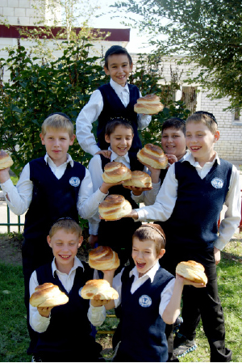

הרב זלמן יפה
מילד יהודי בודד שלא יודע על יהדותו בין המוני ילדים גויים, עשה הרב זלמן יפה דרך ארוכה עד שהגיע לכהן בשליחות הרבי מה”מ בעיר וולגוגרד • העיר שעשתה היסטוריה בכך שעצרה את פלישת הגרמנים, דעכה מבחינה יהודית ורק ניצוץ יהודי קטן נותר בה. הרב יפה ומשפחתו הגיעו לעיר וחוללו בה תחיה יהודית רחבה • בראיון מרתק מגו
מילד יהודי בודד שלא יודע על יהדותו בין המוני ילדים גויים, עשה הרב זלמן יפה דרך ארוכה עד שהגיע לכהן בשליחות הרבי מה”מ בעיר וולגוגרד • העיר שעשתה היסטוריה בכך שעצרה את פלישת הגרמנים, דעכה מבחינה יהודית ורק ניצוץ יהודי קטן נותר בה. הרב יפה ומשפחתו הגיעו לעיר וחוללו בה תחיה יהודית רחבה • בראיון מרתק מגולל הרב יפה את סיפור חייו לצד סיפור שליחותו כאשר צמד המילים “השגחה פרטית” מלווה את סיפורו לעתים תכופות – “זה הדבר שמלווה אותי ומביא אותי להצלחה”, הוא אומר.

היסטוריה מרשימה יש לעיר, אך לא פחות גם ההיסטוריה היהודית שידעה ימים תוססים. לפני כמאה עשרים שנה נבנה במרכז העיר בית כנסת גדול, וכעבור מספר שנים נבנה בית כנסת נוסף.
עם השנים גדלה האוכלוסייה היהודית והתעצמה. חיי קהילה מרשימים התפתחו בעיר ולצדם גם מקוואות ותלמודי תורה. גם חסידי חב”ד רבים התגוררו בה.
כל זה נגדע כאשר המפלגה הקומוניסטית תפסה את השלטון לפני כתשעים שנה, לאחר קרבות ממושכים עם הצבא הלבן בהנהגתו של הגנרל אנטון דניקין. מיד לאחר כיבוש העיר על ידי הקומוניסטים, החלו פעילי המפלגה וסוכני החרש ליישם את גזירותיהם. בתחילה סגרו את בית הכנסת הגדול ובמשך תקופה קצרה סגרו בזה אחר זה את כל המוסדות היהודיים. באגרוף ברזל דוכאה הקהילה היהודית המפוארת ורוחות של כפירה החלו לנשוב בקרב בני הדור הצעיר.
פרסומה העיקרי של העיר בשם סטלינגרד נובע מקרב סטלינגרד שהתחולל בעיר ובסביבתה, והיה אחד הקרבות המכריעים והחשובים במלחמת העולם השניה בין הצבא האדום לצבא הגרמני. העיר וולגוגרד ידועה כעיר שעצרה את התקדמותם המהירה של חיילי צבא גרמניה שדהרו לעבר מוסקבה בעת מלחמת העולם השנייה. בכל יום שיגרו הגרמנים לא פחות מאלף מטוסים כדי להפציץ את העיר. ואכן, לא פחות מחמשה מיליון תושבים, ביניהם יהודים רבים, מצאו את מותם בעיר וסביבותיה. כל מבני העיר נחרבו עד עפר, מלבד ממבנה היסטורי אחד, וכמה מפליא, גם שני מבנים נוספים, הלא הם שני הבניינים הגדולים שפעלו עד לא מכבר כבתי הכנסת הגדולים. עד עצם היום הזה נותרו סימני ההפגזות על קירותיו החיצוניים של אחד מבתי הכנסת, עדות אילמת למה שהתחולל בעיר באותם שנות זעם.
כשהסתיימה המלחמה חזרו אליה גם יהודים רבים, אך השלטון הקומוניסטי שלט בחזקה ולא התיר פעילות דתית, כך במשך שנים ארוכות לא התקיימה בעיר פעילות יהודית גלויה. למרבה הצער, מרבית מבני הדור השני והשלישי כבר נטמעו בין הגויים.
בכל השנים הללו הייתה משפחה אחת שהחזיקה בעיר, אך בקושי, מניין תפילה חשאי, ופעלה במסירות נפש כדי שהלפיד היהודי בעיר לא ידעך. זו הייתה הגחלת היחידה שהשתמרה בעיר.
מי שהחזיר עטרה ליושנה, יצק חיים חדשים והביא לעיר תנופה יהודית, הוא שליח הרבי מלך המשיח הרב זלמן יפה ורעייתו, שהגיעו לפעול בעיר לפני כחמש עשרה שנה. “בתוך ימים ספורים מאז בואנו יסדנו בית חב”ד, שכרנו מבנה לבית הכנסת והתחלנו לפעול. ההתחלה לא הייתה קלה, ובמשך השנים היו לא מעט רגעי שבירה, אך מה שחיזק את ידנו היו מקרים שבהם ראינו את יד ההשגחה העליונה על כל צעד ושעל”, נזכר הרב יפה.
בשנת תשס”ג, לאחר השתדלות רבה, קיבל השליח בחזרה מהעירייה את מבנה בית הכנסת הראשון. בעזרת תרומתם של נגידים הורחב המקום ושופץ ושוב הפך למרכז יהודי רחב ממדים ומפואר ביופיו, הרבה מכפי שהיה טרם הולאם על ידי השלטונות הקומוניסטים.
בית הכנסת כיום מהווה נדבך אחד מתוך שלל פעילויות מגוונות שמפעילים השלוחים. אלה יסדו בין היתר גם בית ספר, גן ילדים, מקווה, בית חב”ד פעיל, סמינרים לצעירים, מחנות קיץ ופעילות אינטנסיבית מסביב למעגל השנה.
הרב יפה ידוע כאחד השלוחים המצליחים במדינה ההיא, וביקשנו לתהות על סוד קסמו.
“צריך להודות שעבודת השליחות אינה עבודה קלה, ישנם קשיים רבים, לא כל סיפור נחתם בסוף טוב, ולא כל זריעה מצמיחה פירות כבר ביום המחרת”, הוא מציין בפנינו כבר בתחילת הראיון. “רק לאחרונה השקעתי באחד המקורבים שעות רבות שלא היו לי; למדנו יחד, התוועדנו, אך נודע לי שהוא שב להרגליו הישנים. זה תסכל אותי וכמעט נשברתי, אך לא נתתי לזה לקרות. אנחנו נמצאים כאן בשליחות הרבי כדי לעבוד ולעבוד קשה. אם מישהו יצא לשליחות ויבקש לספור הצלחות, הוא עלול למצוא עצמו מהר מאד בתחושת תסכול”.
להתוודע אל ה’
הרב זלמן יפה עצמו נולד הרחק ממקום שליחותו – בעיר ‘איבן פרנקוב’ הסמוכה ללבוב שבאוקראינה. משפחתו הייתה רחוקה מאוד משמירת תורה ומצוות. “הוריי, שניהם, היו מהנדסים בהכשרתם וזה היה תחום עיסוקם. פירורי “היהדות” היחידים שהיו בבית הסתכמו בעובדה שהוריי דיברו בשפת האידיש שעה שלא רצו שנבין את דבריהם.
“בשנים מאוחרות יותר, כשהייתי נער והתעניינתי לגבי זהותי, סיפר לי אבא על בית המקדש ועל דוד המלך. אלו הדברים היחידים שידע ובזה הוא שיתף אותי. כששאלתי יותר – לא ידע מה לענות לי”.
מי שדאג להזכיר לו כל העת את זהותו היהודית, היו חבריו לספסל הלימודים. ככל הידוע לו, הוא היה היהודי היחיד בבית הספר. “באוקראינה הגזענות והאנטישמיות היו טבועים עמוק בלב התושבים. החברים הכי טובים שלי נתנו לי להרגיש שאני סוג ב’. תמיד הייתי צריך להתאמץ יותר כדי להוכיח את עצמי. אולם בזכותם הזהות היהודית שלי התחזקה; הייתה בי כמיהה לדעת מהי אותה יהדות שבגינה שונאים אותי, למה יורקים לי בפנים, ולמה אני סובל?! את השאלות הללו שאלתי את הוריי פעמים רבות, אך הם לא ידעו הרבה יותר ממני”.
כשהתגייס לצבא הרוסי בשנת תשמ”ו, סווג לתפקיד מכונאי מטוסים. בבסיס היו חיילים יהודים נוספים ושם שהו יחד כקבוצה. “אמנם לא עשינו שום מצווה, אפילו לא הזכרנו את יום הכיפורים או את חג הפסח, אך פעלנו בכל דבר ועניין כקולקטיב, חלק מהדי.אן.איי של העם היהודי. עזרנו אחד לשני ואהבנו להימצא יחד. חיילים אחרים כבר ידעו שאנחנו היהודים חיים כקבוצה מגובשת.
“במהלך שירותי הצבאי אירע הפיצוץ בכור הגרעיני בצ’רנוביל. על אף שניסו להסתיר מהאזרחים את עוצמת הקטסטרופה, אנחנו בתור אנשי צבא ידענו היטב מה התרחש שם. זכור לי שהדבר גרם לפחד גדול בבסיס. לא ידעו עד כמה הדליפה הגרעינית תזיק ולאן היא תתפשט”.
כשהשתחרר מהצבא, הצטרף להוריו שהיגרו באותם ימים מאוקראינה לסיביר הרחוקה, שם עבדו כמהנדסים בחברת צינורות גדולה.
באותה ימים השלטון הבולשביקי ששלט ברוסיה שבעים שנה התפרק, ורוחות של דמוקרטיה נשבו בחוץ. שערי הברזל נפתחו ויהודים רבים מימשו את חלומם ועלו לארץ הקודש. באותם ימים נזדמן לו לשמוע לראשונה מהוריו על כמיהתם לעלות לארץ ישראל, ארצם של היהודים.
“בהשראת הוריי החלטתי לעלות לארץ ישראל. כדי לקבל אשרת עלייה, היה עלי להמציא מסמכים שיוכיחו את יהדותי. בשל כך חזרתי לעיר הולדתי, שם גם נכנסתי בינתיים ללמוד את השפה העברית באולפן שייסדה הסוכנות היהודית. המלמד היה הרב משה קלטניק, חסיד חב”ד. נוסף על לימודי השפה, הוא החדיר בנו גאווה יהודית ודיבר על ערכים ועל משמעות היותנו בנים לעם היהודי”.
דבריו קסמו והרב יפה מתאר תחושה של מים קרים על נפש עייפה. “הוא הצליח להדליק אצלי את הניצוץ. התחושה הייתה שפעם ראשונה מישהו מגלה לי סוד שאותו חיפשתי לגלות כל ימי חיי מאז עמדתי על דעתי. בקרב הצעירים היהודים הייתה התעוררות רוחנית גדולה לאחר שנים ארוכות של דיכוי, תחושה של סכר שנפרץ. בפעם הראשונה בחיי אני שומע מי אני באמת, מה המהות שלי כיהודי – דבר שחיפשתי הרבה זמן. הרב קלטניק היה מארח אותנו בביתו, שם היינו קוראים יחד ולומדים מתוך ספרים ישנים, ספרי יהדות כמובן, והנשמה החלה להתעורר.
“לאחר תקופה לא ארוכה הפכתי לבעל תשובה. התחברתי לעולמי הפנימי. כשהרגשתי מספיק ‘בשל’, התייעצתי עם הרב קלטניק וביקשתי ממנו שימליץ לי על ישיבה טובה שבה אוכל ללמוד תורה. הוא נתן לי שתי אופציות – הישיבה החב”דית שנפתחה באותם ימים בקייב, או הישיבה שהקימו השלוחים במוסקבה. בחרתי בהצעה השנייה וטסתי למוסקבה. נכנסתי לבית הכנסת ‘מארינה רושצ’ה’ ופשוט התחלתי ללמוד”.
כשהרב יפה נזכר בימים ההם, הוא מתארם כ”תקופה היפה בחייו”, ימים מלאים בלימוד תורה ובהתחזקות רוחנית. “כל יום שעבר בישיבה, התלהבותי התעצמה וגדלה. הצוות בישיבה עשה עבודה נפלאה והאהיב עלינו את הלימוד. ראש הישיבה אז היה הרב אורי קמישוב והמשפיע הרב דוד קרפוב. לצדם סייעו שלוחים צעירים שהגיעו מחצרו של הרבי, בחורים בעלי כריזמה מיוחדת שחן קסום היה נסוך על פניהם. בין היתר הכרתי גם את הרב יצחק קוגן. ראיתי שחסידים הם אנשי אמת ואנשים מיוחדים, ואני רוצה להיות כמותם”.
לאחר שהות של שנה בישיבה, התבשלה ההחלטה לעלות לארץ הקודש ולהמשיך את הלימודים בישיבה בארץ ישראל. הרב בערל לאזאר שעשה אז את תחילת דרכו ברוסיה, יעץ לו להיכנס ללמוד בישיבת חסידי חב”ד בצפת. “מיד לאחר הנחיתה בשדה התעופה, עליתי על אוטובוס היישר לצפת. ניתן לומר שהישיבה במוסקבה בנתה את היהדות שלי והישיבה בצפת הפכה אותי לחסיד. נוסף על הלבביות והרגישות הרבה שאנשי הצוות בצפת ניחנו בה, מצאתי בקהילה קבוצה של חסידים שכבר באו בעליות קודמות, והם קיבלו אותי בחום רב. מי שהשפיעו עלי במיוחד היו הרב דוד נוטיק והרב שלמה רסקין, אצלם הייתי מתארח בשבתות. הרגשתי שביתם הוא ביתי”.
בתשרי תשנ”ג, לאחר שנתיים בהם חבש את ספסלי הישיבה בצפת, טס לראשונה עם חבריו לחצרות קודשנו. “הייתי בבלבול גדול מכל השהות ב-770. לא ידעתי להפעיל את קודי ההתנהגות המתאימים ל-770. עברתי שם ‘ביטוש’ לא קטן. כשראיתי את הרבי לראשונה בתחילת חודש תשרי, הרגשתי כאילו אני רואה מלאך אלוקים. התרגשות עצומה ותחושה פיזית שאני לא יודע להסביר אותה עד היום מלאה אותי מקצה לקצה. מאותו הרגע הרגשתי שאני הופך להיות מקושר בכל רמ”ח ושס”ה”.
כשחזר מ-770 לצפת, סיים את לימודי השחיטה, שחיטת ‘דקות’ ו’גסות’. תקופה מסוימת עבד במשחטה בקרית שמונה, עד שקיבל טלפון מהרב קוגן שביקש ממנו לחזור למוסקבה ולסייע לו בעבודת השחיטה. במוסקבה הכיר את רעייתו, וכעבור תקופה לא ארוכה, השניים נישאו כשהחתונה מתקיימת בארץ הקודש. את מקום מגורם קבעו בצפת, אך לא לאורך זמן. שוב צלצל הטלפון והפעם מעבר לקו היה הרב בערל לאזאר שהציע לבני הזוג לעזוב את החיים הנוחים בצפת ולצאת לשליחות. “לאחר שקיבלנו את ברכת הרבי חזרנו לרוסיה והגענו לוולגורד בשנת תשנ”ו”.
לעמוד ליד הקיר המקולף, לבכות ולבקש
בעיר וולגורד מתגוררים כיום מיליון תושבים, בניהם, על פי הערכת השליח, כחמשת אלפים יהודים. “יחסית לערים גדולות אחרות ברוסיה, מדובר במעט יהודים”, מציין הרב יפה.
לפני שנחתה משפחת יפה בוולגוגרד עם כל הפקלאות, הגיע אליה הרב יפה בגפו כדי להכיר את המקום. הוא מצא בעיר שארית פליטה, מניין וחצי של יהודים מבוגרים שהתעקשו להיפגש מדי פעם בפעם ולהיזכר בימים היפים של הקהילה.
“היה מניין שפעל בראש חודש בלבד, ומי שהפעיל אותו היה יהודי מבוגר, דוד קוליטל שמו, הוא שמר על הגחלת שלא תכבה. באותה תפילה היו אומרים את הקדישים לזכר כל היהודים שנפטרו באותו החודש. מכיוון שבית הכנסת הולאם על ידי הקומוניסטים, התפילות התקיימו בחדר שהקצו להם אנשי הסוכנות היהודית שפעלו בעיר. דוד קוליטל היה משמש בתפקידי בעל קורא, חזן, קברן ובעצם הוא עשה הכול”.
צעירי הצאן לא השתתפו כלל בפעילות היהודית, מה שסימן בבירור את שקיעתה של הקהילה. בואו של השליח שינה את המציאות מן הקצה אל הקצה. “כשנפגשתי עם ר’ דוד, הסברתי לו את מטרת בואנו ואת התוכניות שיש לנו. הוא קם ממקומו, חיבקני ונשקני. הוא שיווע לדם צעיר שיתחיל להפיח חיים בבני הדור והשלישי והבטיח לסייע לי בכל דבר ועניין. בחלוף שבוע הצטרפו אלי רעייתי ושני ילדיי”.
“ראשיתך מצער” לא היה חסר בימי הבראשית של הפעילות, אך מה שסייע לשלוחים שלא להישבר ולהמשיך את תנופת העשייה, היו ההשגחות הפרטיות הרבות שממש נראו על כל צעד ושעל. “בקרב בני הקהילה היו מי שדאגו טרם בואנו לשכור בעבורנו מקום מגורים, אך הבית שהללו מצאו היה במצב מוזנח. זה היה מבנה קטן של שני חדרים, נודף ריחות צחנה וטחב, קירות סדוקים ונוטים ליפול – מקום שלא ראוי למגורים. בטח לא לשלוחים שמבקשים לארח. כשיום אחד בתי הקטנה ישבה מתחת לכיור באמבטיה והכיור נתלש ממקומו ללא הודעה מוקדמת וכמעט שצנח על ראשה, הבנו לחלוטין שמוכרחים למצוא בית נורמלי לחיות בו”.
שבוע בלבד לאחר בואם מצאו עצמם השלוחים מחפשים בית חלופי. “ליקטתי מספרי טלפון של מתווכים רבים, ועוד באותו היום ביקשתי מהם לחפש דירה מתאימה לצרכיי. כולם הבטיחו לחזור אלי; הייתי בטוח שנוצף בטלפונים, אך ההמתנה הייתה לשווא. איש לא חזר. כשראינו שמלאכת חיפוש הבית נתקלת בקשיים, החלטנו להתחיל בינתיים לחפש מבנה נאות עבור הפעילות של בית חב”ד.
“יצאנו עם מתווכים לראות מבנים, אך שום מבנה לא הלם את תוכניותינו. מאוחר יותר הבנו שמה שעמד בדרכינו היא העובדה שמרבית תושבי העיר הם קומוניסטים מושבעים, וגם לאחר התרסקותה של המפלגה עדיין תשעים אחוז מקולות המצביעים בעיר, הולכים למפלגה זו. אף אחד מהם לא רצה לראות פעילות דתית, ועוד יהודית, מתקיימת במבנה שלהם”.
כשחלפו שלושה שבועות של חיפוש אינטנסיבי שלא העלה דבר, חש הרב יפה שבירה. מחשבות על עזיבה החלו להתגנב לראשו. “‘מה אנחנו עושים כאן’? שאלתי את עצמי, ‘אולי בעיר אחרת נצליח יותר’? חשבתי לעצמי – ‘כמעט חודש ימים אנו נמצאים בעיר ומתגוררים בבית מרופט, לא מוצאים בית לגור בו וגם לא מבנה לפעילות’. נעמדתי מול הקיר המקולף של הבית וזעקתי מקירות ליבי: ‘הקב”ה, הרי בשליחות עבדך הנאמן הרבי אני נמצא בעיר הזו, מרצוני החופשי לא הייתי מגיע לכאן, אנא סייע לנו להסתדר ולהתחיל לפעול’.
“לא ידעתי כמה מהר הקב”ה ישמע את תפילתי. כבר למחרת פגש אותי יהודי וביקש לשוחח איתי. הוא שיתף אותי בתחושה הטובה שיש לו כשהוא רואה יהודי כמוני צועד ברחוב, והוא שאל אפוא במה יוכל לסייע לי? סיפרתי לו על החיפושים אחר דירה ומבנה לפעילות. הוא נדרך וסיפר לי שיש לו חבר גוי עם מבנה שכבר עומד זמן מה להשכרה. יחד הלכנו לפגוש את החבר. נכנסתי למבנה וראיתי שהוא לא מתאים, ואז נזכר בחבר נוסף, גם הוא בעל מבנה להשכרה. הלכנו למבנה השני, אני נכנס ובודק אותו, ונותר מוקסם ומשתאה; בדיוק מה שאני מחפש, אולם, כניסה נפרדת לגברים ונשים, מטבח, משרד – והמחיר פשוט מגוחך. לרגע חששתי לחתום על חוזה שמא יש בעיות שאינן ידועות לי. חששתי מתרמית, אבל רעייתי שהיא עורכת דין במקצועה, נכנסה לעובי הקורה, בדקה הכול ואכן לא הייתה כל בעיה. עוד באותו ערב חתמנו על חוזה.
“חזרתי הביתה שמח וטוב לב. סוף כל סוף העניינים מתחילים לזוז. כעת צריך להתחיל לטפל בדירה למגורים. החלטתי לשחזר את ההצלחה מאמש; נעמדתי מול אותו קיר ודיברתי עם הקב”ה. הודיתי על המבנה וביקשתי סייעתא מיוחדת במציאת דירה. למחרת בבוקר התעוררתי לקול צלצול טלפון. מעבר לקו היה מתווך ששאל אותי האם בקשתי לדירה עדיין רלוונטית, שכן הוא מצא בעבורי דירה טובה. עניתי בחיוב ויצאנו לבדוק.
“מצאתי דירה מרווחת, כזו שאפשר לארח בה הרבה אורחים. גם המחיר היה פחות יותר מהמחירים ששמעתי עד אז. כבר באותו ערב חתמנו על חוזה, ובתוך כמה ימים עברנו לדירה החדשה הממוקמת דקות ספורות מהמבנה של בית חב”ד. מדובר בהשגחה פרטית מדהימה, שכן העיר בנויה בצורה צרה וארוכה, והיא מתפרסת על פני שמונים קילומטר”…
תלוקטו אחד לאחד
העבודה בשנים הראשונות הייתה מאוד קשה וסיזיפית. “היינו צריכים ללקט את יהודי העיר אחד אחד. המודעות היהודית לא הייתה קיימת והיה צריך להמציא אותה מחדש.
“אני זוכר סיפור שאירע באותה תקופה. הטלפון בבית צלצל, עניתי ואמרתי מיד ‘הרב זלמן שלום’, ואז השתררה שתיקה מעבר לקו. חולפות כמה שניות ואישה שואלת אותי, ‘אתה רב?’ עניתי בחיוב, ואז הסתבר שהיא בכלל ביקשה להתקשר לחברה שלה אך טעתה במספר. ניצלתי את ההזדמנות ושאלתי אותה האם היא יהודיה, והיא השיבה בחיוב. קבענו להיפגש ומאז היא ומשפחתה הפכו להיות חלק מהגרעין הקשה של המקורבים”.
סיפור גורר סיפור, והרב יפה נזכר בעוד סיפור שאירע באותם ימים ראשונים של פעילות.
“הגיעה אלי בתיאום מראש עיתונאית של אחד העיתונים בעיר וביקשה לראיין אותי לגבי חוק מסוים שעבר באותם ימים בעירייה. היא רצתה לדעת מה היהודים חושבים על החוק. היא חיפשה אם יש יהודים בעיר וכך היא הגיעה אלי. כשהראיון הסתיים, תחושת בטן גרמה לי לשאול אותה למוצאה, והיא סיפרה שידוע לה שאימה יהודיה. סיפרתי לה על הפעילות שלנו, וכך גם העיתונאית הזאת הפכה להיות חלק אינטגראלי מהקהילה המתחדשת. דרכה הכרנו משפחה נוספת, זוג יהודי ובת, משפחה שמסייעת לנו רבות”.
בקיץ הבא הצליחו השלוחים לארגן סמינר יהודי מחוץ לעיר ל-12 משפחות יהודיות. כמו כן ארגנו השלוחים קעמפ לבנים ובנות. “בסיום הקעמפ הזמנו ממוסקבה את המוהל הרב ישעיה שפיט למול חמשה ילדים. בשנה הראשונה בלבד מלו את עצמם ארבעים וחמשה יהודים, ושלושים וחמשה זוגות נשאו עד היום כדת משה וישראל”.
לאחר שהפעילות החב”דית התבססה וחוג המקורבים הלך וגדל, הגיע הזמן לפתוח בית ספר יהודי. “הרב לאזאר מאוד דחף לכך. הייתי אז צעיר ולא הבנתי די את גודל ההשקעה והמשאבים הרבים הדרושים להקמת בית ספר. הייתה זו ההשגחה העליונה הראשונה שלא ידעתי, וכך קפצתי על העגלה בבחינת ‘לכתחילה אריבער’. הרגשנו שהרבי מלווה אותנו בכל צעד ושעל. מהר מאד מצאנו מנהלת מקצועית שהייתה לרוחנו ובהשגחה פרטית מצאנו מבנה גדול ורחב ידיים שמסביבו עצים וצמחייה רבה. התחלנו להפעיל בית ספר יהודי ומאוחר יותר גם גני ילדים, ומאז ועד היום הכול פועל נהדר וקוצר הצלחות רבות”.
השוטרים הגיעו רגע אחד אחרי…
כשאני מבקש לשמוע סיפורים מהשליחות, הרב יפה שב ומדגיש ששליחות זה לא סיפורים, “שליחות זה עבודה יום יומית קשה”, הוא מבהיר מיד, אבל מוכן לספר אי אילו מקרים מעניינים.
“לפני כמה שנים חזרתי ברכבת ממוסקבה, שם שהיתי עם סטודנטים שהגיעו מהעיר שלנו לסמינר יהדות שקיימנו שם. לשוטרים ברוסיה יש כמה שיטות איך להוציא כסף מאנשים. אחת השיטות היא לבדוק אם חסר איזה מסמך, ואז הם נוטלים שוחד או שהם שולחים אותך לכלא. איתרע מזלי ובאותה נסיעה עלו לרכבת שני שוטרים. כנראה שהם חשבו שאני אדם עשיר ונטפלו אלי. הם ביקשו שאוציא את הדרכון. לדבריהם הייתה חסרה לי חתימה באחד העמודים. הם רמזו רמיזה אבל אני לא הבנתי את הרמז, והם הודיעו שכבר דיווחו עלי למשטרה ובתחנה הבאה אני ארד ואעצר מיד.
“כששמעתי שכך הם פני הדברים, טלפנתי מיד לאישים רמי דרג בוולגורד, הם נחלצו לעזרתי ועירבו את הקג”ב. חלפו דקות לא ארוכות ושני השוטרים חזרו אלי וביקשו להתנצל על כך שלקחו ממני את הדרכון. הם טענו שמאוד היו רוצים להחזיר לי אותו, אך כיוון שהעניין שלי כבר הגיע לדרגים גבוהים, הם חייבים לנסוע איתי עד לתחנת המשטרה בוולגורד ושם ילוו אותי לחוקר. כבר שמחתי שאני לא צריך לרדת בתחנה הבאה, אך כאב לי שזה אקורד הסיום אחרי סמינר יהדות כה מוצלח; זה לא משהו שאתה מצפה לו.
“כשהגענו לוולגורד, כבר המתינו לי ברציף כמה שוטרים. הדרכון הוחזר לי ולאחר נסיעה קצרה הוכנסתי לחדרו של סגן מפקד התחנה. הוא התחיל לשאול אותי שאלות עבור הפרוטוקול, ובין השאלות שאל לזהותי ולמעשיי בוולגורד. סיפרתי על בית הכנסת שקיבלנו בחזרה מעירייה ואנחנו מפעילים אותו, על גני הילדים ובית הספר שהקמנו, ועל הסמינר ליהדות שקיימנו זה עתה במוסקבה. אני מדבר ואני לא מבין למה הקצין הקשוח מתחיל לדמוע. כשנרגע מעט החל לספר לי שהוא בן לעם היהודי. השתוממתי. לא הכרתי אותו עד אז. כמובן שהכנסתי אותו לרשימות היהודים שעמם אנחנו עומדים בקשר, ומאז היינו בקשר. לאחר תקופה לא ארוכה, הוא נפטר בגיל צעיר. כשנודע לי הדבר, חשבתי לעצמי שמדובר בהשגחה פרטית מופלאה – הרי בלי המעצר המיותר הזה לא הייתי מגלה אותו, והנה כעת הלך לבית עולמו לאחר שקיים אי אלו מצוות והתוודע ליהדותו”.
בפיו של הרב יפה עוד סיפור שלדבריו הכה גלים בעיר בעת התרחשותו:
“אינני יודע איך זה קרה אחרי שנים ארוכות של דיכוי, אבל האמונה אצל אנשים רבים בקהילה היא מדהימה. אנשים רבים אוהבים לקרוא תהילים ברוסטוב – מרחק שש שעות נסיעה – על ציונו של הרבי הרש”ב. אני תמיד חושב לעצמי מאיפה הדבר צמח, הרי הם לא חונכו על כך. אך הסיפור שהתרחש בעטיה של תפילה בציונו של הרבי הרש”ב, גורם ליהודים רבים מוולגורד לנהור לציון הקדוש.
“בבעלותו של ראש הקהילה שלנו היה שלושה בתי הימורים – בתי עסק שלפני עידן הנשיא מדבדב היו חוקיים ברוסיה. מיד לאחר בחירתו הודיע הנשיא מדבדב שהוא מוציא מחוץ לחוק את ההימורים, אך אנשים ברוסיה חשבו שהוא לא רציני בהצהרותיו. כך או כך, יום בהיר אחד אני מקבל טלפון מראש הקהל שמבקש לנסוע יחד איתי לציון ברוסטוב. הסכמתי ויצאנו לדרך הארוכה. במהלך הנסיעה ראיתי שפניו אינם כתמול שלשום והתעניינתי מדוע נתכרכמו פניו.
“הוא סיפר לי שכבר שבוע שהוא לא ישן מפני שעסקיו מפסידים מדי יום הון רב, סכום שכבר מסתכם בשלוש מאות אלף דולר, מה גם שהנשיא מדבדב עומד לסגור את העסקים הללו. הוא ביקש לנסוע לרבי הרש”ב ולבקש את ברכתו. הנסיעה התקיימה ביום חמישי בערב. הוא הגיע לשם ואמר את ה’מענה לשון’ בבכיות רבות, קרא פרקי תהילים ולבסוף חזרנו הביתה.
“פגשתי אותו שוב ביום שני כשפניו קורנות מאושר. ‘מה קרה?’ שאלתי בהיסוס, ‘הרי כעת שמעתי שמדבדב הכניס לתוקף את החוק הנשיאותי האוסר על בתי הימורים’.
“הוא חייך וביקש לספר לי דבר מה. מסתבר שעוד באותו ערב בו חזרנו מה’ציון’, התקשר אליו גוי מקומי וביקש לקנות ממנו את עסקיו. אותו גוי כנראה לא האמין שהנשיא יממש את הצהרתו, וביקש אפוא לקנות את עסקי ההימורים במחיר זול. אך ראש הקהילה שלנו הוא היה יהודי חכם, וסיפר לו שיש עוד קונים פוטנציאליים ובכך גרם לו להעלות את סכום הקנייה עד שהדבר השתלם לו. בכסף הזה הוא גם כיסה את החובות שהצטברו לו, וגם יכול היה להרשות לעצמו להיכנס לעסקים אחרים.
“מיד לאחר שהכסף הועבר והחוזה נחתם, התדפקו שוטרים על דלת ביתו וביקשו ממנו לסגור את עסקיו בשל הצו הנשיאותי, אך הוא הפנה אותם לבעל הבית החדש שזה עתה ביצע את הרכישה…
“הסיפור הזה התפרסם בעיר וחולל רעש גדול. אם בעבר היינו יוצאים מדי ראש חודש אל ה’ציון’ עם מכונית, הרי שכיום יש נסיעות שאנחנו צריכים להזמין אוטובוס”.
• איך אתם מתמודדים עם ההתבוללות הגדולה, שזו המכה שמלווה כל שליח במדינות חבר העמים?
“יש לנו אכן בקהילה יהודים רבים שנשואים לגויות, או יהודיות נשואות לגויים. קשה מאוד לשכנע יהודי עם משפחה לעזוב את בת או בן זוגו. לכן עיקר הפעילות שלנו מושקעת במניעה בקרב הדור הבא. אנחנו מקיימים מדי שנה סמינרים לצעירים וצעירות, וחלק ניכר מההרצאות והפעילויות מתמקדות בחשיבות של נישואים עם יהודים דווקא”.
• אתם המשפחה החב”דית היחידה בעיר, איך הדבר משפיע על חינוך הילדים? איך מצליחים לתת להם חינוך חסידי?
“הנושא של החינוך הוא אחד הנושאים הקשים ביותר, ולא רק לשלוחים ברוסיה אלא לשלוחים בכל עיר ומדינה אחרת בעולם הרחוקים מריכוז חב”די. כשאני מדבר עם אשתי על כך, היא אומרת שצריך לסמוך על הרבי וזה מה שאנחנו עושים.
“הבת הגדולה שלי כבר יצאה ללמוד במכון חיה מושקא במוסקבה, והריחוק הזה הוא לא קל בעבורנו וגם לא לה. הילדים האחרים נמצאים איתנו ביחד והם חלק מהשליחות”.
• הרבי חוזר ואומר שהעולם מוכן לגאולה – עד כמה הדבר ניכר בפעילות שלכם?
“אנחנו משתדלים לשזור בכל הרצאה את המסר בנושא של משיח. יש כאלה ששואלים ומבקשים להעמיק בנושא, ואז אנחנו נכנסים להסברים מפורטים יותר. אנשים מקבלים את זה יפה. בכלל, אנשים מבינים שבלי הרבי לא היינו מגיעים לעיר הזאת, ובעצם כל פעילות שאנו עושים נעשית בשליחותו של המלך המשיח.
“לשאלתך עד כמה הדבר חודר, אספר לך משהו שהראה לי שזה אכן חודר. זה קרה ביום ראשון האחרון. נסעתי עם מקורב שלנו לציון ברוסטוב כשבאמצע הדרך הוא אומר לי ‘אנחנו נוסעים הרבה פעמים לרוסטוב, ומה עם נסיעה ל-770’? דבריו מאוד הדהימו אותי. לא ציפיתי להם. ניסיתי לבדוק עד כמה הוא רציני והשבתי לו בחזרה, ‘בא לך לראות את ניו יורק’? הוא הרים גבה ואמר לי, ‘אם יש מדינה שארצה לראות זו דווקא אוסטרליה; לניו-יורק אני מגיע נטו בשביל הרבי…”
הכול כבר בנוי לתלפיות
כשאנחנו שואלים את הרב יפה לסיום לגבי תוכניות לעתיד, הוא מסביר שמבחינת מוסדות כבר הכול בנוי לתלפיות, מהמסד עד הטפחות ועיקר השקעתו היא להגיע כעת לכל יהודי ויהודי המתגורר בעיר ורצונו להרחיב את מעגל המקורבים.
הרב יפה מבקש לחתום את הכתבה בתודות לעומדים לימינו. “לשלוחים ברוסיה ובהם לנדבני הלב הגדולים – ר’ לוי לביוב ולנדיב מירלשווילי על עזרתם הרבה במסגרת ‘קרן אור אבנר’.
“כמו כן תודה גדולה לשליח הרבי ורבה הראשי של רוסיה הרב בערל לאזאר שמסייע רבות בחכמה ובחן מיוחד, תמיד פנוי לענות על שאלות ולייעץ בכל נושא נדרש”.